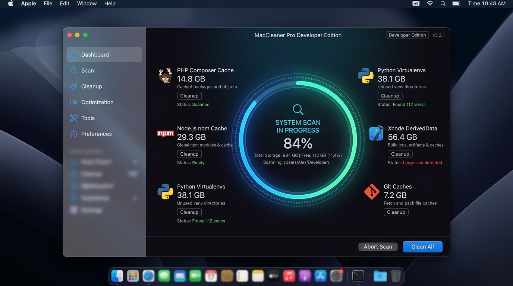

Reclaim tens of gigabytes on your Mac. Safely purge PHP Composer, Node.js npm/yarn/bun, Python virtualenvs, and Xcode DerivedData.
Powered by Firebase Realtime Database
Built natively for macOS to optimize storage, clear heavy developer build artifacts, and accelerate system performance.
Scans ~/.composer/cache, PHP temp session files, Laravel storage caches, compiled Blade views, and project vendor directories.
Cleans global ~/.npm, ~/.yarn/cache, ~/.pnpm-store, ~/.bun caches, heavy node_modules, and Next.js / Nuxt .next build outputs.
Cleans pip cache (~/.cache/pip), PyPoetry, __pycache__ bytecode, CocoaPods, SwiftPM build stores, Cargo, and Go module caches.
Removes Xcode DerivedData (~/Library/Developer/Xcode/DerivedData), device logs, old archives, and iOS Simulator caches.
Scans macOS system caches (/Library/Caches), user caches, log files, and empties system trash safely.
Allows targeting any directory on your Mac to scan hidden files, locate large build folders, and free up space.
Native Swift & SwiftUI user interface designed seamlessly for macOS Dark Mode.

Created by Ahmed Elmwafy for software engineers & macOS power users.
MacCleaner Pro was engineered to solve a major pain point for developers: hidden build artifacts (node_modules, composer vendor, Xcode DerivedData, venvs) silently consuming tens of gigabytes. Built with native Swift performance and privacy first, MacCleaner Pro puts you in full control of your Mac storage.
Compatible with macOS Monterey, Ventura, Sonoma, and Sequoia (Apple Silicon & Intel).
v3.2.1 • Universal Binary (M1/M2/M3 & Intel) • Drag & Drop Install
Download DMG